السلسلة 1
الدراجة النارية (صنف A) · 20 سؤال. كل سؤال فيه الصورة والصوت. اختار الجواب (ولا جوج إلا كانو صحاح)، ورك على «تأكيد» باش تشوف واش صبتي.
- 20سؤال
- 16باش تنجح
- 1 – 4جواب واحد ولا أكثر
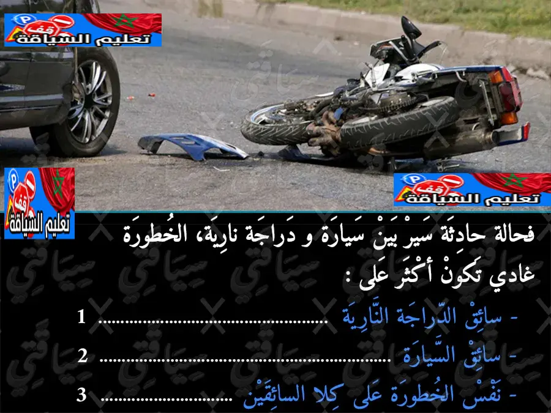
الكلافيي: 1–4 للجواب، Enter للتأكيد وللسؤال الجاي.
السلسلة 1 · النتيجة ديالك
0 / 20
السلسلة 1
الدراجة النارية (صنف A) · 20 سؤال، بالصوت، مع الجواب الصحيح والشرح.
السؤال 1
بيّن الجواب
الجواب الصحيح: 1
الجواب هو سائق الدراجة النارية (مول الموطور) علاش؟ بكل بساطة، سائق السيارة كيكون محمي بالهيكل ديال الطوموبيل، عندو حزام السلامة، الوسائد الهوائية، ووسائل حماية أخرى. أما سائق الدراجة النارية، فهو معرض مباشرة للصدمة. الجسم ديالو هو لي كيتحمل الصدمة الأولى، و هادشي علاش الإصابات ديالو كتكون غالبا خطيرة بزاف، وخا تكون الحادثة بسيطة. ما تجريش بزاف: بما أن الجسم ديالك معرض للخطر بصفة مباشرة، السرعة الزائدة كتزيد من خطورة الإصابة بشكل كبير. كلما كانت السرعة أقل، كلما كان عندك الوقت باش تتفادى الخطر، وحتى إذا وقعات الحادثة، الضرر كيكون أقل. تذكر ديما أنك الطرف الضعيف فالطريق، وسلامتك كتبدا من أنك تنقص السرعة وتكون ديما يقظ. الجواب الصحيح هو رقم 1.
السؤال 2
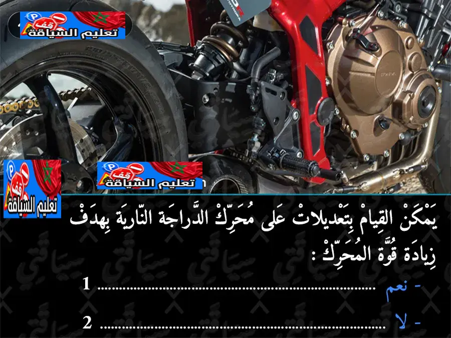
بيّن الجواب
الجواب الصحيح: 2
مدونة السير تمنع منعاً كلياً القيام بأي تعديلات على الخصائص التقنية للمحرك المسجلة في الورقة الرمادية للدراجة بهدف زيادة قوتها. هذا المنع ليس فقط سببه قانوني لتجنب الغرامات وحجز الدراجة، بل هو بالأساس لحماية سلامتك، لأن الدراجة النارية مصممة كنظام متكامل؛ فالهيكل ونظام الفرملة (الفران) كلها مصممة لتتحمل القوة الأصلية للمحرك. عند زيادة هذه القوة، فإنك تخلق خللاً في هذا التوازن، حيث تصبح الفرامل غير كافية لوقف الدراجة بفعالية، مما يجعلها خطيرة جداً ويعرض حياتك وحياة الآخرين للخطر. الجواب الصحيح هو رقم 2.
السؤال 3
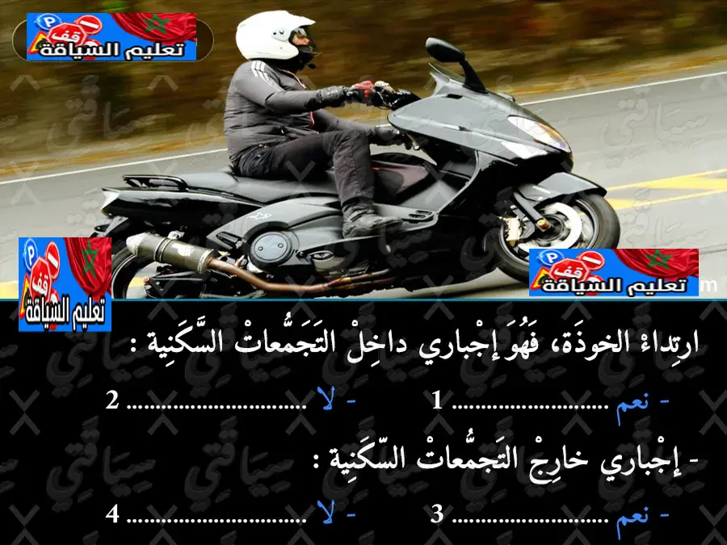
بيّن الجواب
الجواب الصحيح: 1 و 3
حسب مدونة السير المغربية، ارتداء الخوذة الواقية (الكاسك) هو إجباري دائما وبدون استثناء على سائق الدراجة النارية وكذلك على الراكب اللي معاه. القانون ماكيفرقش نهائيا بين السياقة داخل المدينة أو خارجها، فالخطر ديال الحوادث والإصابات في الرأس كايبقى هو نفسو في كل الأماكن. لهذا السبب، لازم تعقل ديما أن الكاسك ماشي مجرد اختيار، بل هو واجب قانوني ومسألة حياة أو موت لحماية راسك في أي طريق كنتي فيها، سواء كانت زنقة صغيرة في حومتك أو طريق وطنية طويلة. الجواب الصحيح هو رقم 1 و 3.
السؤال 4
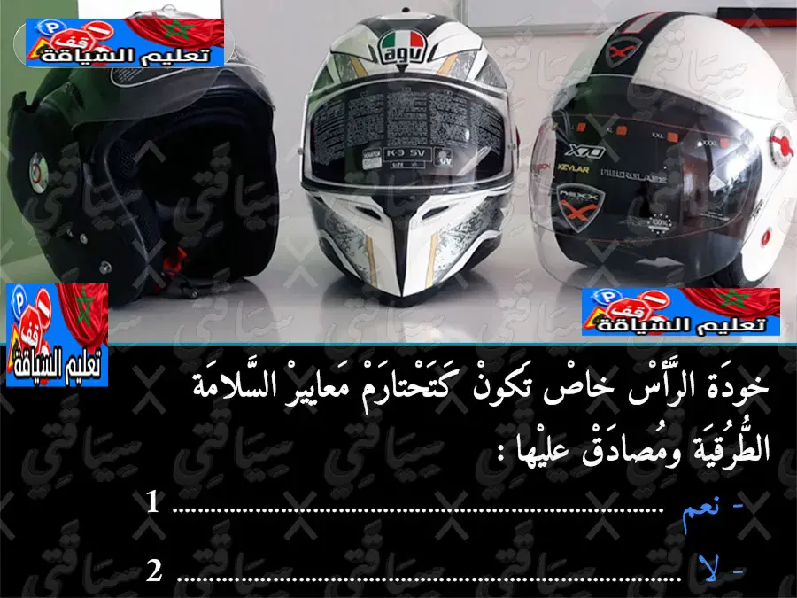
بيّن الجواب
الجواب الصحيح: 1
الجواب الصحيح هو نعم، فارتداء الخوذة وحده لا يكفي لضمان سلامتك أو لتكون في وضعية قانونية. مدونة السير تفرض بشكل واضح أن تكون الخوذة (الكاسك) التي تستعملها "مصادق عليها" (homologuée)، وهو ما يعني أنها خضعت لاختبارات الجودة والسلامة وأثبتت قدرتها على حماية الرأس بشكل فعال عند وقوع الصدمات. استعمال خوذة غير معتمدة أو ذات جودة رديئة لا يوفر أي حماية حقيقية وقد يتسبب في إصابات أخطر، كما أنه يعرضك لمخالفة قانونية، لأن الهدف من القانون ليس فقط تغطية الرأس، بل حمايته فعلياً بأداة تتوفر فيها كل معايير السلامة الطرقية المطلوبة. الجواب الصحيح هو رقم 1.
السؤال 5
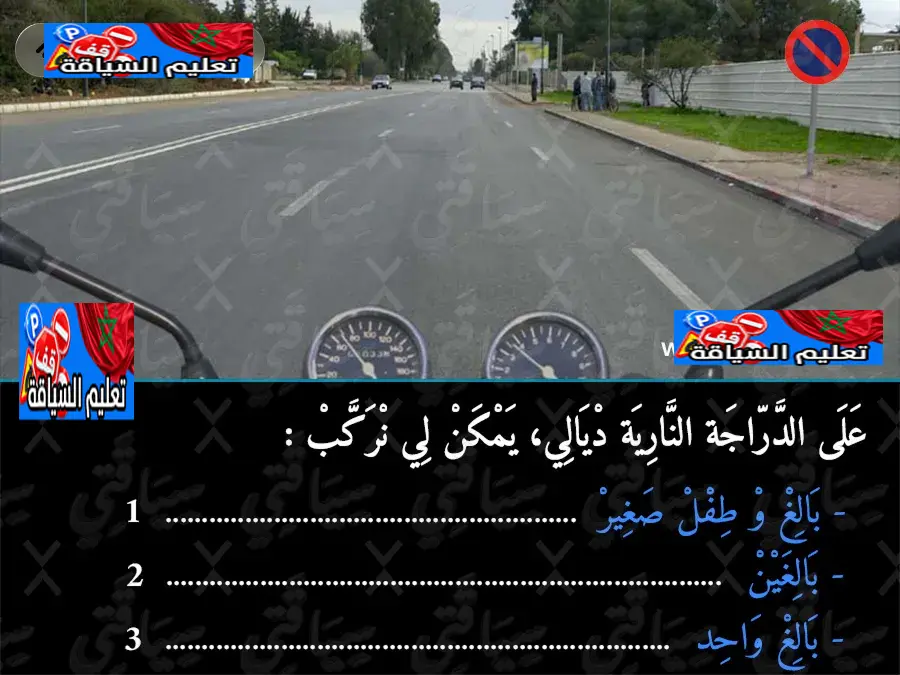
بيّن الجواب
الجواب الصحيح: 3
الجواب الصحيح هو أنه يمكنك أن تركب معك بالغ واحد فقط. حسب مدونة السير المغربية، الدراجة النارية مصممة ومصادق عليها قانونياً لنقل شخصين لا أكثر: السائق وراكب واحد. هذا الأمر يكون مسجلاً في الورقة الرمادية (la carte grise) التي تحدد عدد المقاعد المسموح بها. لهذا السبب، يُمنع منعاً كلياً نقل راكبين إضافيين (مثل بالغ وطفل صغير)، لأن هذا التصرف يتجاوز العدد القانوني ويعتبر مخالفة خطيرة، كما أنه يعرض سلامة السائق والركاب لخطر كبير بسبب تأثيره على توازن الدراجة وقدرة التحكم فيها. الجواب الصحيح هو رقم 3.
السؤال 6
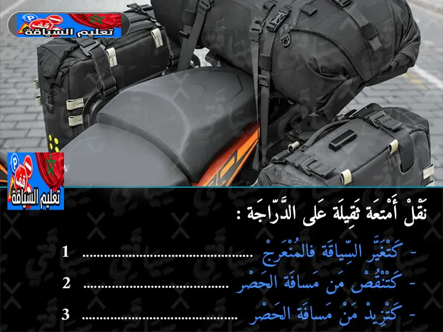
بيّن الجواب
الجواب الصحيح: 1 و 3
عندما تقوم بنقل أمتعة ثقيلة على دراجتك النارية، فإنك تضيف وزناً إضافياً يؤثر بشكل مباشر على فيزياء الدراجة. هذا الوزن الزائد يغير مركز الثقل للدراجة، مما يجعل التحكم فيها أصعب و يغير من طريقة السياقة خصوصاً في المنعرجات (الفراجات)، حيث يصبح من الصعب الحفاظ على توازنها. وفي نفس الوقت، وبسبب زيادة الوزن الإجمالي، فإن الدراجة تحتاج إلى قوة ومسافة أكبر لكي تتوقف بشكل كامل، وهذا يعني أن مسافة الحصر (الفرملة) تزيد بشكل ملحوظ، مما يفرض عليك أخذ الحيطة والحذر وترك مسافة أمان أكبر. أما الجواب رقم 2 فكلما زاد الوزن على الدراجة، كلما احتاجت لمسافة أطول باش توقف. فكر فيها هكذا: الوزن الزائد كيدفع الدراجة للأمام بقوة أكبر، وهادشي كيخلي الفرامل محتاجة لوقت ومسافة كبر باش تقدر تشدها. لهذا، من المستحيل أن مسافة الحصر "تنقص" مع زيادة الوزن، بل العكس هو الصحيح. الجواب الصحيح هو رقم 1 و 3.
السؤال 7
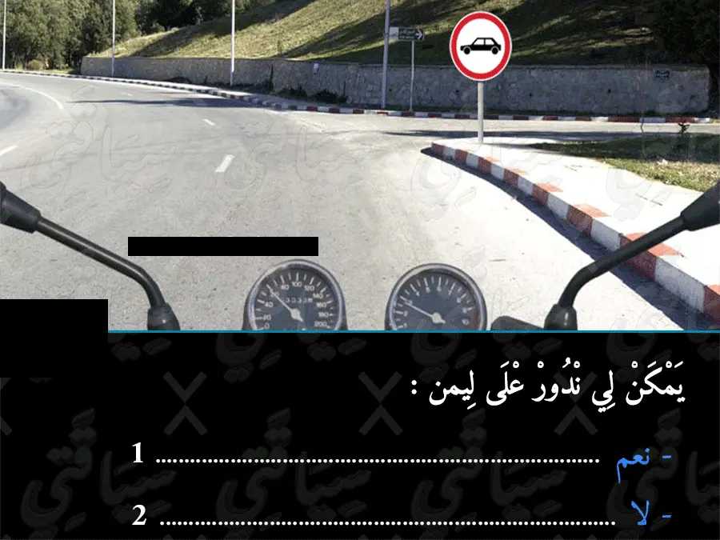
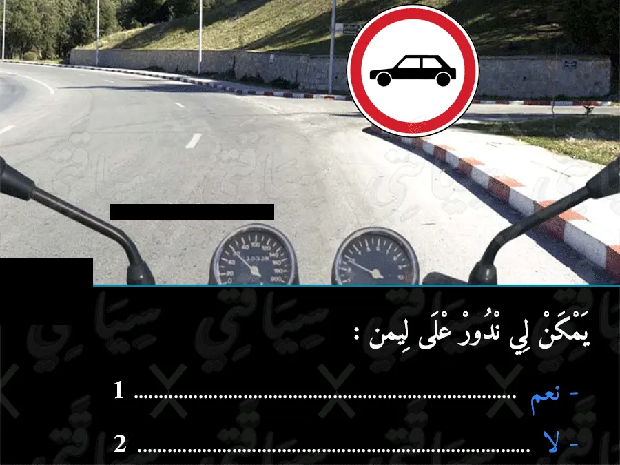
بيّن الجواب
الجواب الصحيح: 1
يمكن ليك تدور على ليمن. العلامة اللي كاينة فالصورة هي علامة ديال المنع، ولكن خاصك تركز مزيان على الرمز اللي مرسوم وسطها، الرمز هو ديال سيارة (طوموبيل) ماشي دراجة نارية. هادشي كيعني أن المنع كيطبق فقط على السيارات والعربات اللي بحالها، أما نتا كسائق دراجة نارية (موطور)، فهاد العلامة مكتعنيكش نهائياً. إذن، بما أن المنع خاص غير بالسيارات، نتا عندك الحق تكمل طريقك ودور على ليمن. الجواب الصحيح هو رقم 1.
السؤال 8
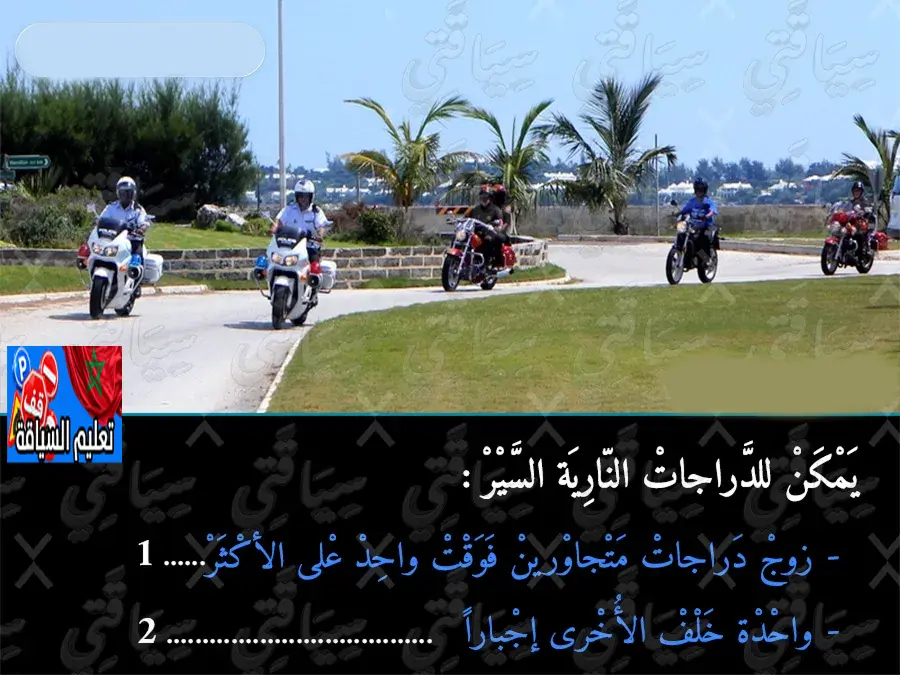
بيّن الجواب
الجواب الصحيح: 2
الدراجات النارية يجب أن تسير واحدة خلف الأخرى بشكل إجباري. مدونة السير المغربية تفرض هذه القاعدة بشكل صارم لضمان السلامة. عندما تسير الدراجات في صف واحد (واحد مورا لاخر)، فإن كل سائق يحتفظ بالسيطرة الكاملة على مسلكه ومساحة كافية للمناورة وتفادي أي خطر مفاجئ، كما يسهل على السيارات الأخرى رؤيتهم وتجاوزهم بأمان. أمّا بالنسبة لـ السير بدراجتين متجاورتين (جنب إلى جنب)، فهو سلوك ممنوع قانونياً وخطير للغاية، لأنه يقلل من مساحة الهروب لكل سائق في حالة الطوارئ ويجعلهم كتلة واحدة يصعب على باقي السائقين التعامل معها، مما يرفع من خطر وقوع الحوادث بشكل كبير. الجواب الصحيح هو رقم 2.
السؤال 9
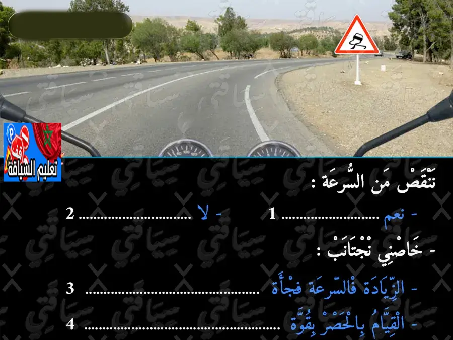
بيّن الجواب
الجواب الصحيح: 1 و 3 و 4
العلامة الطّرقية اللي قدامك هي علامة خطر على بعد 150 متر بما أننا خارج المجال الحضري، و كتعلمك بوجود طريق كتزلق، وهادشي كيفرض عليك أولاً تنقص من السرعة لانها علامة خطر وأيضا باش تكون مستعد لأي انزلاق. من بعد، فاش كتكون غادي فوق طريق كتزلق، الرويض مكيشدوش مزيان فالأرض، ولهذا السبب خاصك تتجنب أي حركة مفاجئة. يعني خاصك تجنب تزيد فالسرعة دقة وحدة (تكسيري بالجهد) لأن الرويضة اللورانية تقدر تدور فالخاوي وتفقد التوازن، وخاصك كذلك تجنب تفراني بالجهد لأن الرويض ممكن يتبلوكاو والموطور يزلق بيك. باختصار، عند رؤية هذه العلامة، يجب عليك السياقة بسلاسة وهدوء لتجنب فقدان السيطرة على الموطور. الجواب الصحيح هو رقم 1 و 3 و 4.
السؤال 10
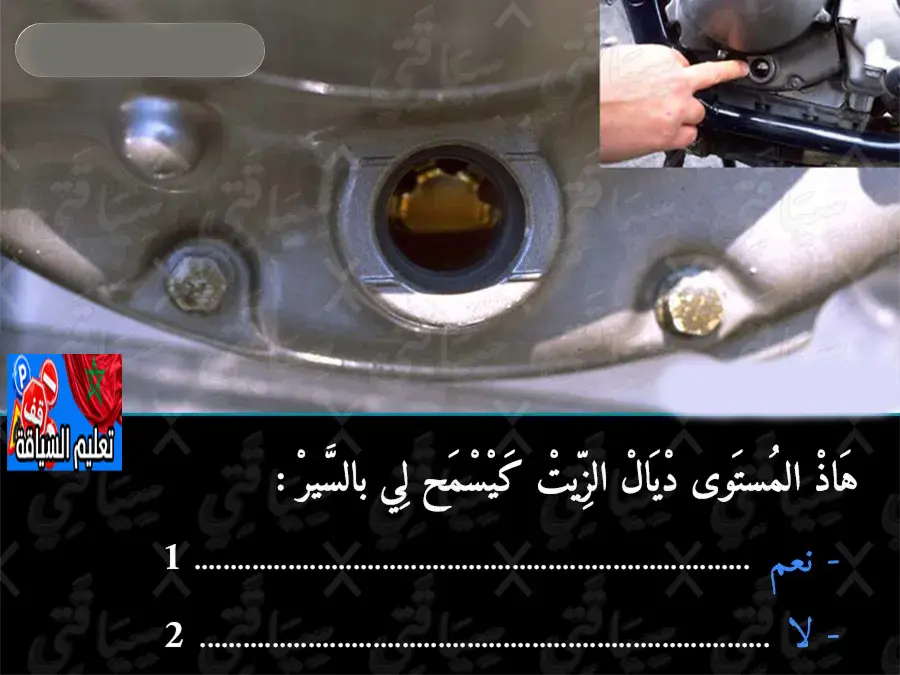
بيّن الجواب
الجواب الصحيح: 1
الجواب الصحيح هو نعم، هذا المستوى ديال الزيت كيسمح ليك بالسير. الصورة كتبين ليك العين الزجاجية (le voyant) لي كتمكنك من مراقبة مستوى زيت المحرك. القاعدة كتقول أن المستوى الصحيح ديال الزيت خاصو يكون ديما ما بين جوج ديال العلامات أو الشرطات: العلامة السفلى لي هي الحد الأدنى (MIN)، والعلامة العليا لي هي الحد الأقصى (MAX). كيفما هو واضح فالصورة، المستوى ديال الزيت كاين بين هاد جوج علامات، وهادشي كيعني أنه فالمستوى المثالي، لا ناقص لا زايد. إذن، بما أن مستوى الزيت كافي ومضبوط، فيمكن ليك تسوق الدراجة ديالك بأمان تام. الجواب الصحيح هو رقم 1.
السؤال 11
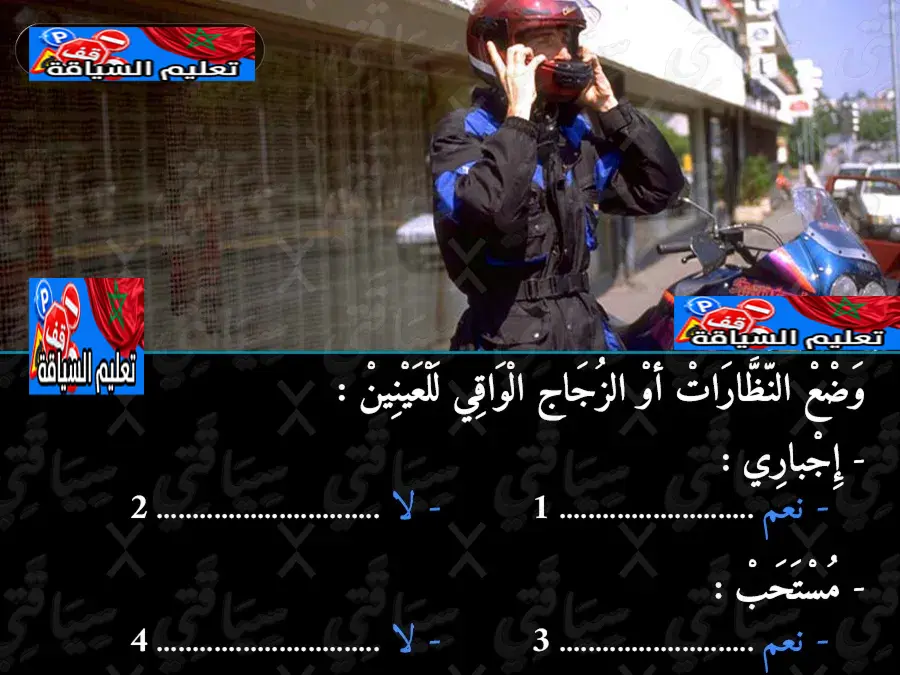
بيّن الجواب
الجواب الصحيح: 2 و 3
حسب مدونة السير المغربية، فإن العنصر الوحيد الذي هو إجباري (إلزامي) بشكل قاطع هو ارتداء الخوذة الواقية (الكاسك) المصادق عليها. القانون يركز بشكل أساسي على حماية الرأس لأنها أخطر منطقة معرضة للإصابة. أما حماية العينين، فرغم أنها ضرورية جداً للسلامة، إلا أن القانون لا يعتبرها "إجبارية" بنفس درجة الخوذة، بل يعتبرها "مستحبة" و "موصى بها بشدة". ومع ذلك، يجب أن تعرف أن السياقة بدون حماية للعينين تعرضك لخطر كبير بسبب الرياح والحشرات والغبار، وهو ما قد يؤدي إلى فقدان السيطرة، لهذا السبب، من أجل سلامتك الشخصية، يجب أن تعتبرها ضرورية لك حتى وإن لم تكن إجبارية في القانون. الجواب الصحيح هو رقم 2 و 3.
السؤال 12
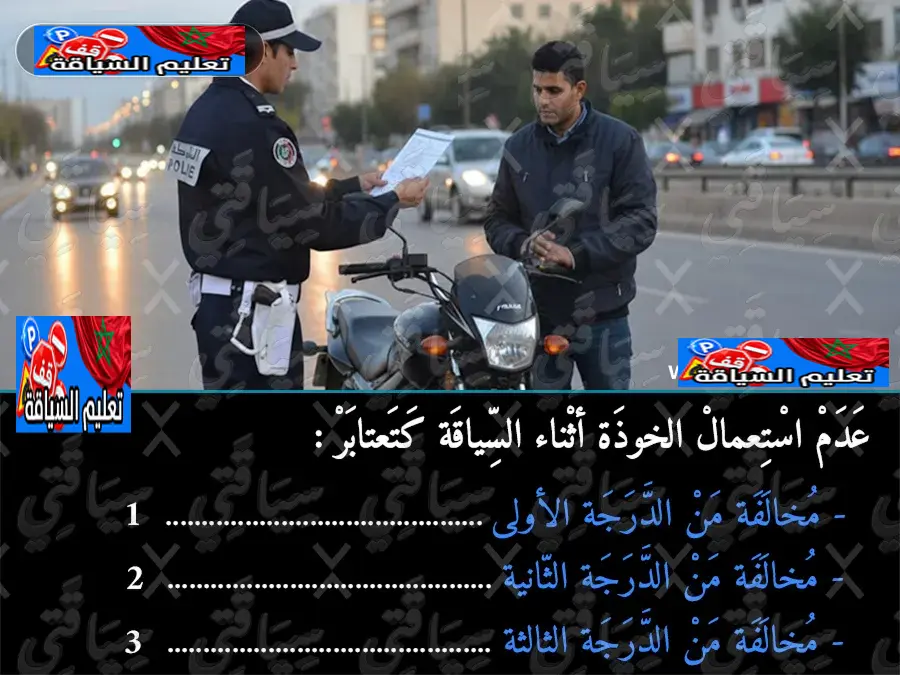
بيّن الجواب
الجواب الصحيح: 3
عدم ارتداء الخوذة هو مخالفة من الدرجة الثالثة، والأصل في غرامتها هو 300 درهم، وهذه المخالفة يترتب عليها سحب نقطتين من رخصة السياقة. لكن، القانون يمنحك إمكانية الاستفادة من غرامة مخفضة حسب سرعة الأداء كالتالي: إذا قمت بأداء المخالفة بشكل فوري أو في نفس اليوم الذي تم فيه تحريرها، فإنك تؤدي فقط مبلغ 150 درهم. أما إذا لم تؤدها في نفس اليوم، وقمت بأدائها ابتداءً من اليوم الموالي وخلال أجل 15 يوماً، فإن المبلغ يصبح هو 200 درهم. وبعد انقضاء أجل 15 يوماً، تصبح ملزماً بأداء المبلغ الأصلي كاملاً وهو 300 درهم. الجواب الصحيح هو رقم 3.
السؤال 13
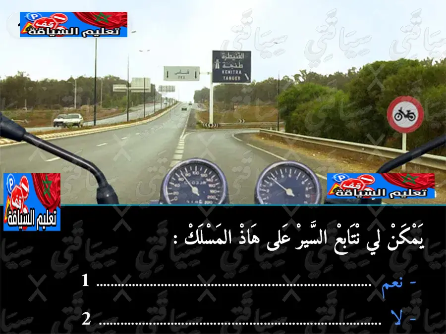
بيّن الجواب
الجواب الصحيح: 1
العلامة الموجودة في الصورة، والتي تحمل رمز دراجة نارية عادية وبسيطة، تعني في مدونة السير المغربية أن المنع يخص الدراجات النارية الخفيفة أو الصغيرة فقط (ذات سعة المحرك الصغيرة التي لا تتجاوز 125 سنتيمتر مكعب). أما الدراجات النارية الكبيرة، فهي غير معنية بهذا المنع. بالفعل، توجد علامة منع أخرى تشبهها ولكن برمز لدراجة نارية أكبر حجماً وذات سائق، وتلك العلامة هي التي تعني "منع مرور جميع أنواع الدراجات النارية، الكبيرة والصغيرة". بما أن العلامة في الصورة تخص فقط الدراجات الصغيرة، فإن سائق دراجة نارية كبيرة (وهو ما يفترض في مترشح رخصة السياقة من هذا الصنف) لا يعتبر معنياً بهذا المنع، وبالتالي يحق له قانوناً متابعة السير في هذا المسلك لدخول الطريق السيار. الجواب الصحيح هو رقم 1.
السؤال 14
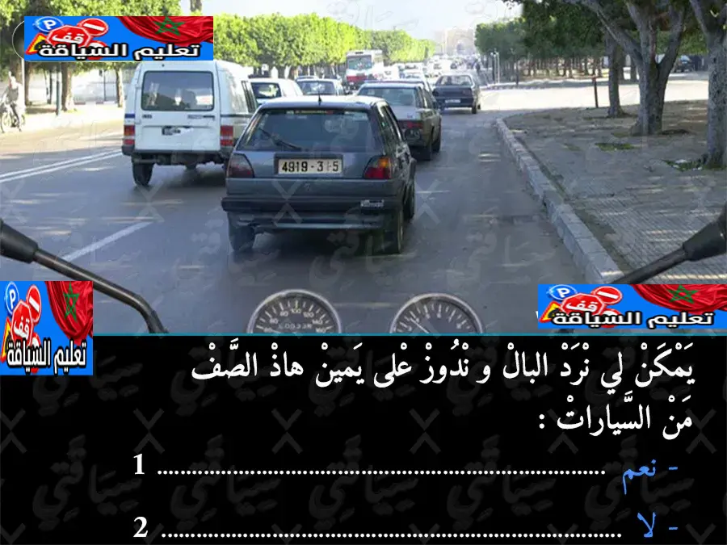
بيّن الجواب
الجواب الصحيح: 2
حسب مدونة السير المغربية، قاعدة التجاوز واضحة جداً: التجاوز دائماً وأبداً كيكون من جهة اليسار. المرور من جهة اليمين كما هو موضح في الصورة هو سلوك خطير جداً وممنوع قانونياً، لأنك مكتكونش مرئي للسائقين الآخرين وتقدر تعرض راسك للخطر، مثلاً يقدر شي سائق يفتح الباب ديالو على غفلة، أو يبغي يدور لليمين بلا ما يشوفك، أو يخرج شي راجل (مشاة) من بين السيارات. لهذا السبب، وخا تكون حركة السير واقفة أو ثقيلة، خاصك ديما تبقى فالمسلك ديالك وتلتزم بقاعدة التجاوز من اليسار فقط. الجواب الصحيح هو رقم 2.
السؤال 15
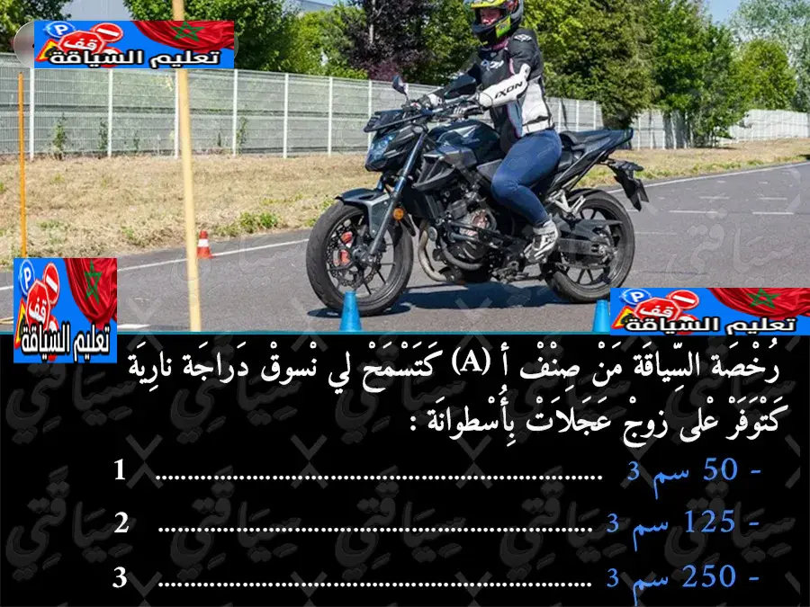
بيّن الجواب
الجواب الصحيح: 3
الجواب الصحيح هو 250 سم³ (رقم 3). السبب: حسب مدونة السير المغربية، رخصة السياقة من صنف أ (A) هي الرخصة الخاصة بالدراجات النارية اللي كتفوق أسطوانتها 125 سم³. يعني هاد الصنف كيتعرّف بالضبط بهاد الفئة الكبيرة ديال الدراجات، وما كيتسماش رخصة أ غير إلا كانت الدراجة فوق 125 سم³. أما الاختيارات الأخرى، كل وحدة فيهم عندها الصنف ديالها: 50 سم³ (رقم 1): هادي دراجة ذات محرك صغير (سيكلوموتور)، وما كتحتاجش رخصة من صنف أ. 125 سم³ (رقم 2): هادي داخلة تحت صنف أ1 (A1)، اللي محدد فالدراجات اللي ما كتفوقش 125 سم³. ولهذا، الدراجة اللي رخصة صنف أ هي الرخصة المطلوبة ديالها بالضبط هي اللي أسطوانتها 250 سم³. الجواب الصحيح هو رقم 3.
السؤال 16
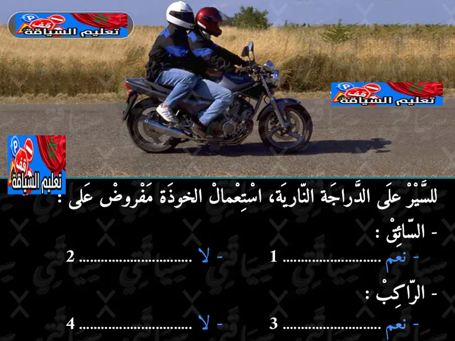
بيّن الجواب
الجواب الصحيح: 1 و 3
حسب مدونة السير المغربية، هاد القاعدة واضحة وصارمة جداً: لبس الكاسك إجباري ومفروض عليكم بجوج، السائق والشخص اللي راكب معاه. القانون ماكيفرقش بيناتهم لأن الخطر كيكون عليكم بجوج بنفس الدرجة في حالة وقوع حادثة. والنقطة المهمة اللي خاصك تعرفها كسائق هي أنك نتا المسؤول قانونيا على الراكب اللي معاك، يعني إلا كان هو ما دايرش الكاسك، المخالفة كتسجل عليك نتا. إذن، بدون أي استثناء، سواء داخل المدينة أو خارجها، لمسافة قصيرة أو طويلة، الكاسك ضروري ومفروض عليكم بجوج لضمان سلامتكم. الجواب الصحيح هو رقم 1. 3
السؤال 17
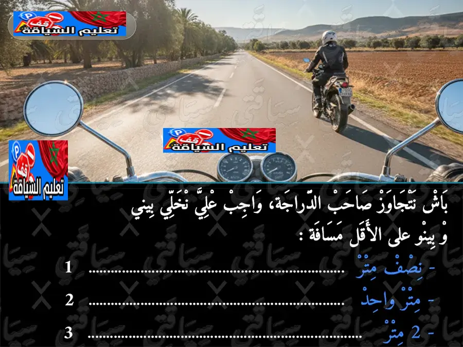
بيّن الجواب
الجواب الصحيح: 2
حسب آخر التعديلات في مدونة السير المغربية، تم توحيد مسافة التجاوز الجانبية. القانون الجديد يفرض على السائقين ترك مسافة أمان جانبية لا تقل عن متر واحد (1 متر) عند التتجاوز، وهذا الواجب يطبق سواء كنا نسير داخل المجال الحضري أو خارجه. ولإتمام المعلومة، ففي حالة اخرى وهي حالة التقابل (يعني فاش كتكون غادي وتتلاقى مع راجل جاي من الاتجاه المعاكس على يمين الطّريق)، فإن مسافة الأمان الجانبية الواجب تركها هي مترين (2 متر) على الأقل. خلاصة: التجاوز نترك متر واحد وبالنسبة للتقابل نترك على الأقل 2 أمتار. الجواب الصحيح هو رقم 2.
السؤال 18
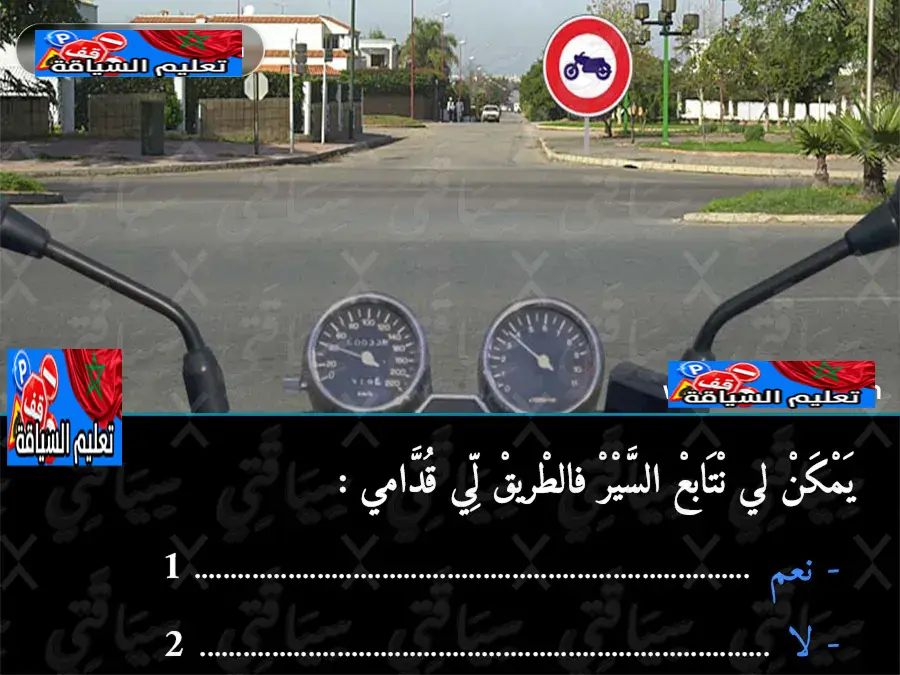
بيّن الجواب
الجواب الصحيح: 2
لا يمكنك متابعة السير في الطريق الذي أمامك. السبب واضح ومباشر وهو علامة المنع الموجودة في الصورة. هذه العلامة (دائرة حمراء ووسطها رمز لدراجة نارية كبيرة) تعني بشكل صريح أن مرور جميع أنواع الدراجات النارية ممنوع في هذا الشارع. وهنا يجب أن تنتبه جيداً للفرق: هذا الرمز للدراجة النارية الكبيرة (motocyclette) ليس مثل رمز الدراجة الصغيرة (cyclomoteur). عندما تجد هذه العلامة بهذا الرمز المحدد، فالمنع يطبق على كل الدراجات النارية الكبيرة. بما أنك تقود دراجة نارية كبيرة من صنف A، فأنت معني مباشرة بهذا المنع ويجب عليك تغيير اتجاهك. الجواب الصحيح هو رقم 2.
السؤال 19
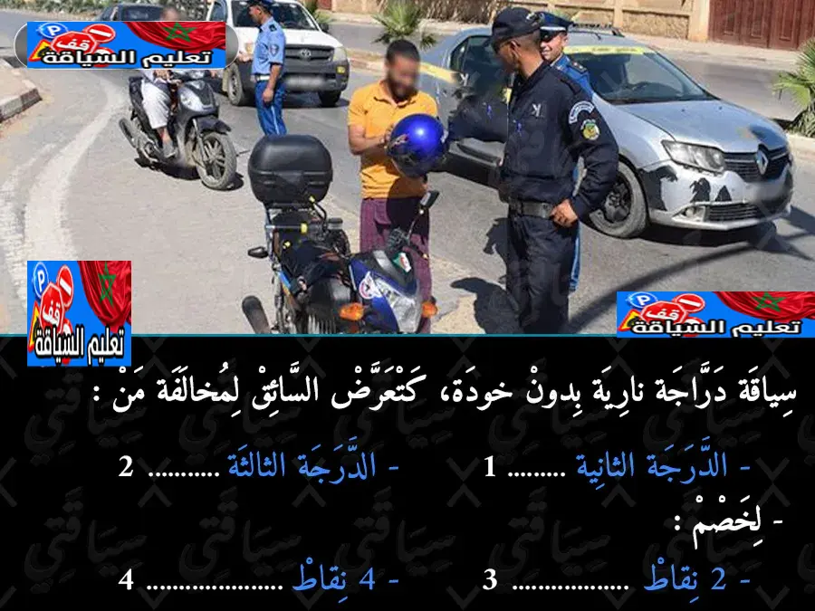
بيّن الجواب
الجواب الصحيح: 2 و 3
عدم ارتداء الخوذة يعتبر مخالفة من الدرجة الثالثة، وفي نفس الوقت يترتب عليها خصم نقطتينمن رصيد رخصة السياقة. ومن ناحية الغرامة المالية، هي مصنفة في الدرجة الثالثة (غرامة 300 درهم، مع إمكانية التخفيض إلى 150 درهم بالأداء الفوري). ولكن، نظراً للخطورة الكبيرة لهذه المخالفة على حياتك، قرر المشرع تشديد العقوبة وأضاف إليها عقوبة خصم نقطتين، وهي عقوبة عادة ما تكون مرتبطة بالمخالفات من الدرجة الثانية. إذن، عقل مزيان: السياقة بدون خوذة = مخالفة من الدرجة الثالثة من حيث الغرامة + خصم نقطتين من رصيد رخصة السياقة. الجواب الصحيح هو رقم 2 و 3.
السؤال 20
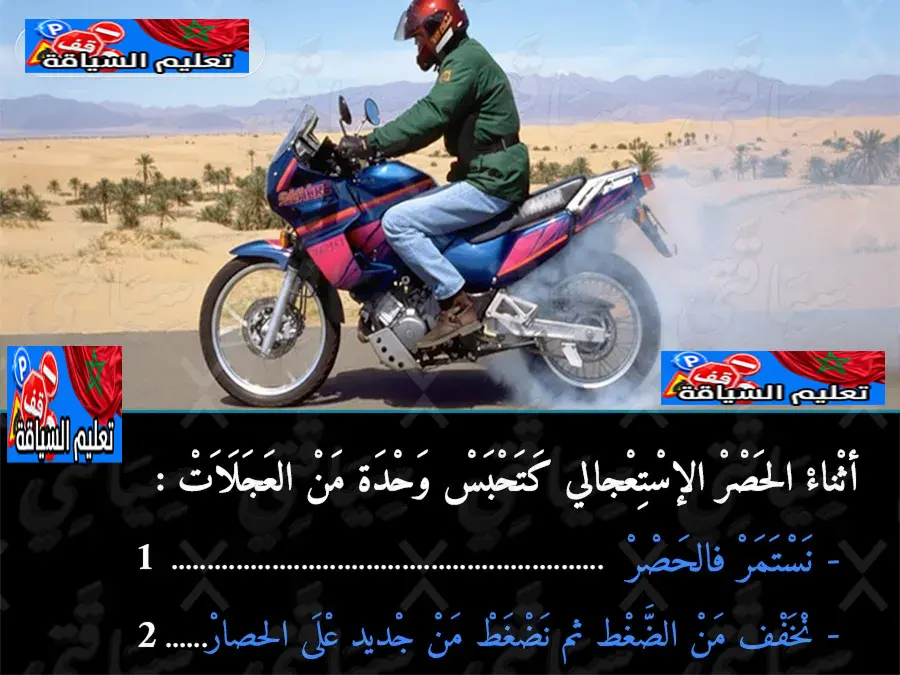
بيّن الجواب
الجواب الصحيح: 2
الجواب الصحيح هو نخفف من الضغط ثم نضغط من جديد على الحصار أثناء الفرملة الاستعجالية، إذا أحسست بأن إحدى العجلات (خاصة العجلة الأمامية) قد انحبست أو "تبلوكات"، فهذا يعني أنها توقفت عن الدوران وبدأت في الانزلاق على الطريق، وفي هذه اللحظة تفقد كل قدرة على التحكم والتوجيه. التصرف الصحيح والآمن هو أن تخفف الضغط قليلاً عن الفرامل للسماح للعجلة بالدوران من جديد واستعادة تماسكها مع الأرض، وبمجرد أن تستعيد التحكم، تضغط مرة أخرى على الفرامل بشكل تدريجي ومتقطع لتكمل عملية التوقف بأمان. أما الاختيار رقم 1، الذي يقترح الاستمرار في الحصر، فهو تصرف خاطئ وخطير للغاية، لأن الاستمرار في الضغط على الفرامل بينما العجلة منحبسة سيزيد من مسافة الانزلاق ويؤدي حتماً إلى فقدان التوازن والسقوط. الجواب الصحيح هو رقم 2.